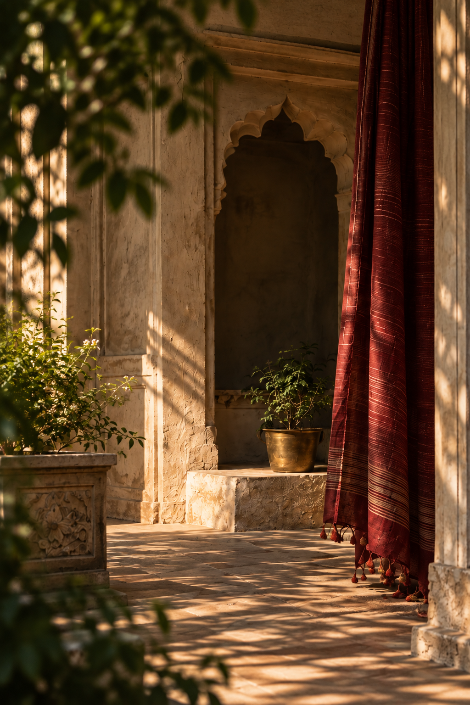

Why Chiniya?
A few words on one of Varanasi's quietest silk traditions.

INDIAN HERITAGE / CONTEMPORARY LIVING
PRATHA brings India's craft traditions into a modern, contemporary language — quiet, timeless and made for real homes.
Discover the collection →OUR PHILOSOPHY
We work with textiles, materials and craft traditions, selecting pieces for their meaning, history and ability to live naturally in our present.
OUR FIRST COLLECTION
Light-catching silk, woven in Varanasi.
Designed for everyday life.
MADE FOR
Our textiles, often considered luxe, are made to last. For the saree equal to an heirloom, the shawl for winter evenings, the dupatta that becomes a constant.
Explore our textiles →A SLOWER WAY OF LIVING
Old havelis. Worn stone. Tulsi in a courtyard. A house working late into the afternoon. PRATHA takes its visual language from real Indian homes and the natural rhythm of everyday life.
THE HOUSE
Pratha means a tradition, a practice passed down and carried forward.
We work with Indian textiles and craft traditions, selecting pieces for their materiality, history and ability to live naturally in the present.
Our story →JOURNAL
A few words on one of Varanasi's quietest silk traditions.
On weavers, patterns and the people who make Indian textiles possible.
Why we choose fewer things, made to last, over trend-led interiors.
STAY CLOSE
New collections, stories and journal notes.
hello@pratha.in →